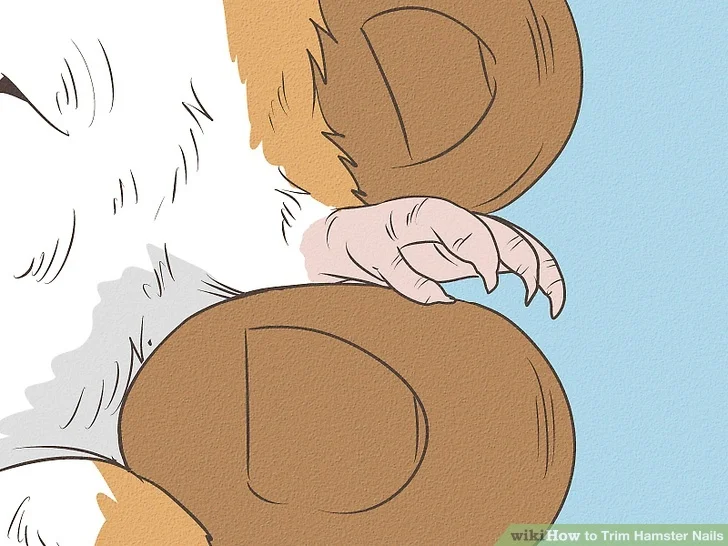
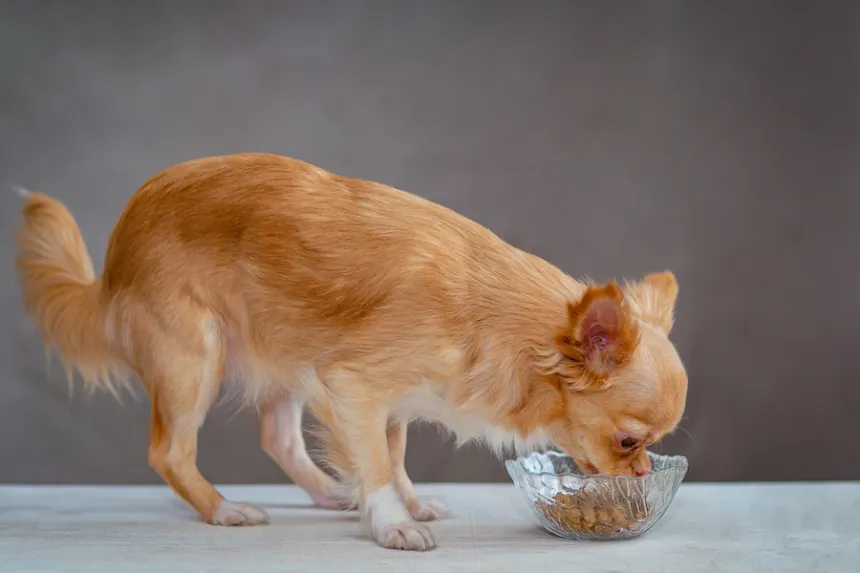

Signs That Your Dog Is Stubborn And Disobedient
Dogs are often called loyal companions, and they have earned this reputation for good reason.
Read Article
How To Stay Healthy Around Cats
Creamy steamed milk swirling over rich espresso.
Read Article

How to Trim Hamster Nails
If your hamster's nails are overgrown so that they are folding inwards or curling sideways, they likely need to be trimmed.
Read Article
How To Train A Bird
Espresso meets artisan dark chocolate.
Read Article

How to Train Your Fish To Do Tricks
Fish training is a fun, interesting activity to enrich the life of your pet fish.
Read Article

What To Feed a Chihuahua
Chihuahuas are prone to obesity, so it's important to feed them a well-balanced diet and to exercise them daily.
Read Article

Behavior And Training Tips For Golden Retrievers
Golden Retrievers generally have a sweet-natured temperament; they are often friendly dogs that get along with children, other pets, and even strangers.
Read Article

Shih Tzu Grooming Guide
Shih Tzu are minimal shedders, but don't confuse that with having minimal grooming needs.
Read Article